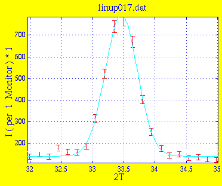
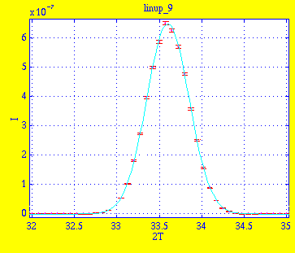
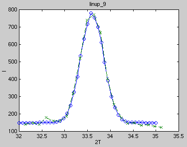

2-axis 2T scan on Al2O3 powder sample, focus
Measurements
Now slits are mounted, one 20x32mm behind C1, the other 16x40mm before C2. An
Al2O3 powder sample is put on the sample table. A 2T scan is performed in
2-axis mode (no analysator), focus mode. 2TA is scanned from 32° to 35° with
10sec/point. Data file linup017.dat.

Amplitude 6.5369e+02 2.1464e+01
Centre 3.3460e+01 8.3716e-03
Width 2.5560e-01 7.4442e-03
Background 1.4136e+02 3.6619e+00
* Chi Squared 1.0656
Simulations
This is the result linup_9.sim of
simulation with 1e6 neutrons.
Instrument definition linup-5.instr.

Amplitude 6.4809e-07 2.7739e-09
Centre 3.3602e+01 6.5292e-04
Width 2.4956e-01 6.5459e-04
Background -6.0603e-10 2.7508e-10
* Chi Squared 1.2761
Comparison

Kristian Nielsen
<kristian.nielsen@risoe.dk> /
Jul 17, 1998.